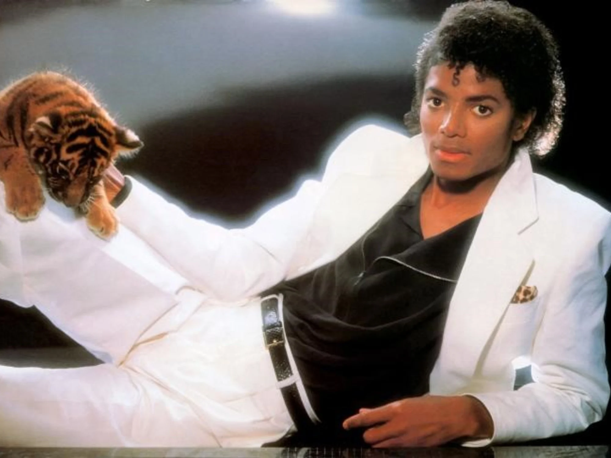
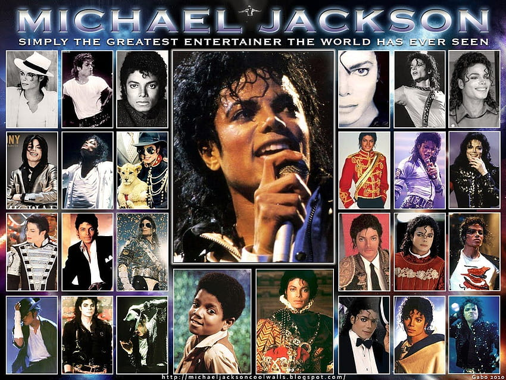
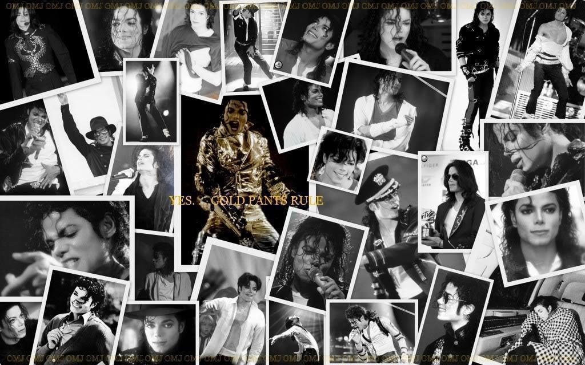

A 14 años de su fallecimiento, conoce la historia de Michael Jackson, "el rey del pop". La estrella de la música que ganó fama mundial como artista en solitario con éxitos como Thriller, Billie Jean y Bad. Su extensa carrera musical le llevó a ganar hasta 13 premios Grammy y ser considerado un revolucionario. Aquí te presentamos como Michael Jackson cambió la música, y cambio la historia del pop de los años '80.


